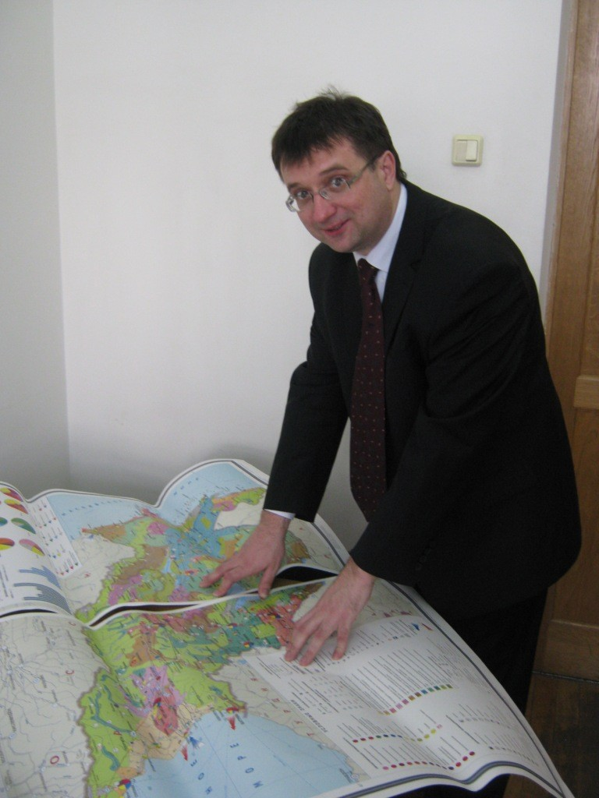

Современные открытия в области слив | новейшая находка - СливаТулин

Современные открытия в области слив | новейшая находка - СливаТулин
Сегодня учёными было открыто новое месторождение сливатулина, она располагается в Предгорьях Малого И Большого Кавказа. Запасы оцениваются в 6 миллионов тонн.
Наша редакция отправилась на ГеоFuck и наткнулась там на особого специалиста, который показал нам где именно находится SlivaTulin:

А вот и комментарий: Учёные готовят проекты по использованию сливатулина в общественной и политической жизни.
Но скептики утверждают, что он может употребляться в олимпиадные движении. Мы опрасили некоторых учащихся, что они думают на эту тему:
"Конечно, я считаю, что учёные сделали открытие, теперь сливатулин будет доступен для всех!"
"Ой, адчапіцеся, усе гэта выдумкі, нічога няма, но дайце грошы, мо і знойдзем!"